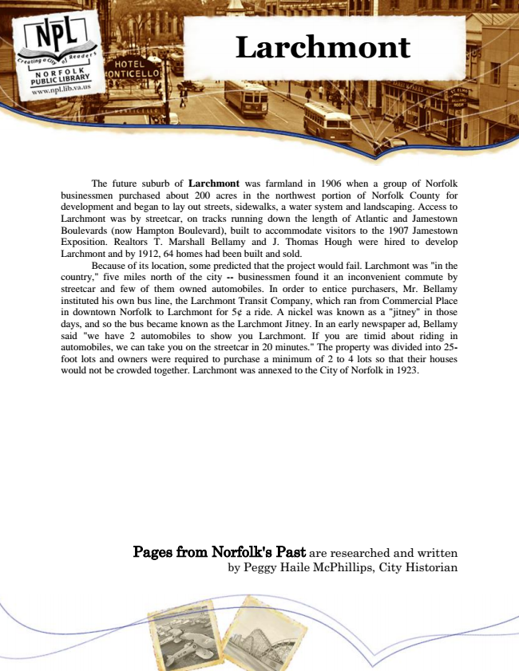

Larchmont
The future suburb of Larchmont was farmland in 1906 when a group of Norfolk businessmen purchased about 200 acres in the northwest portion of Norfolk County for development and began to lay out streets, sidewalks, a water system and landscaping. Access to Larchmont was by streetcar, on tracks running down the length of Atlantic and Jamestown Boulevards (now Hampton Boulevard), built to accommodate visitors to the 1907 Jamestown Exposition. Realtors T. Marshall Bellamy and J. Thomas Hough were hired to develop Larchmont and by 1912, 64 homes had been built and sold.
Because of its location, some predicted that the project would fail. Larchmont was "in the country," five miles north of the city -- businessmen found it an inconvenient commute by streetcar and few of them owned automobiles. In order to entice purchasers, Mr. Bellamy instituted his own bus line, the Larchmont Transit Company, which ran from Commercial Place in downtown Norfolk to Larchmont for 5¢ a ride. A nickel was known as a "jitney" in those days, and so the bus became known as the Larchmont Jitney. In an early newspaper ad, Bellamy said "we have 2 automobiles to show you Larchmont. If you are timid about riding in automobiles, we can take you on the streetcar in 20 minutes." The property was divided into 25- foot lots and owners were required to purchase a minimum of 2 to 4 lots so that their houses would not be crowded together. Larchmont was annexed to the City of Norfolk in 1923.
Pages from Norfolk's Past are researched and written by Peggy Haile McPhillips, City Historian